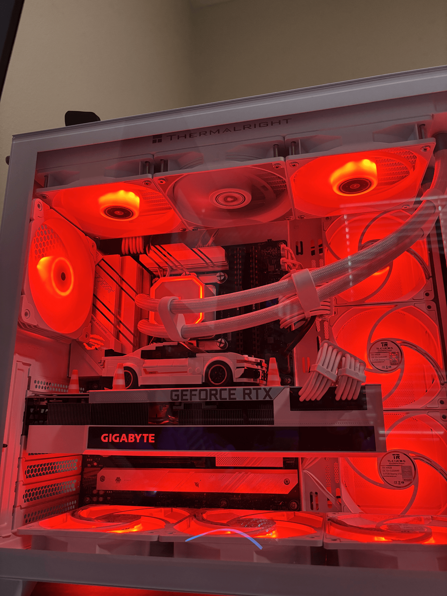

Media Demonstrations
Welcome to my media demonstration page! This page showcases different types of digital media, including audio, video, animation, interactive slideshows, and embedded content. The examples focus on my interests in computers, technology, and PC building.
-
Audio Introduction
Listen to a short introduction to my technology portfolio and PC-building interests.
-
PC Build Video
A short video showcasing my desktop PC and its hardware and lighting.
-
PC RGB Animation
An animated look at my PC's RGB lighting and hardware.

-
Technology Project Slideshow
-
Interactive Image Map
Click the highlighted area to return to the Home page.
-
How to Build a Gaming PC
This video demonstrates the process of building a desktop computer, including installing components and assembling the system.